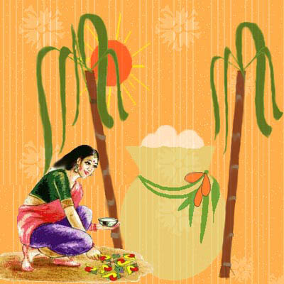
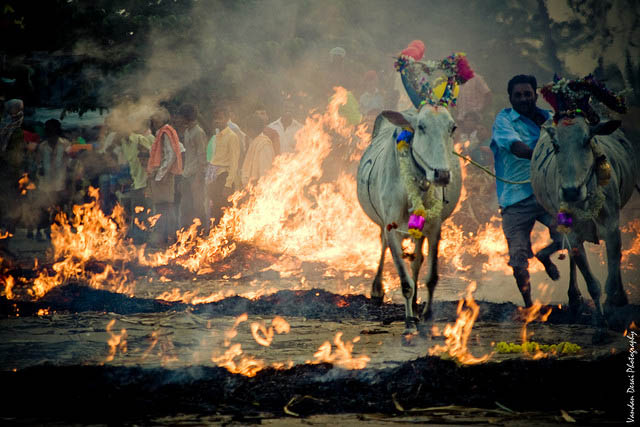

Pongal Festival

Pongal is a four-days-long harvest festival celebrated in
Tamil Nadu, a southern state of India. For as long as people have been
planting and gathering food, there has been some form of harvest
festival. Pongal, one of the most important popular Hindu festivals of
the year. This four-day festival of thanksgiving to nature takes its
name from the Tamil word meaning "to boil" and is held in the month of
Thai (January-February) during the season when rice and other cereals,
sugar-cane, and turmeric (an essential ingredient in Tamil cooking)
are harvested.
Mid-January is an important time in
the Tamil calendar. The harvest festival, Pongal, falls typically on
the 14th or the 15th of January and is the quintessential 'Tamil
Festival'. Pongal is a harvest festival, a traditional occasion for
giving thanks to nature, for celebrating the life cycles that give us
grain. Tamilians say
'Thai pirandhaal vazhi pirakkum', and
believe that knotty family problems will be solved with the advent of
the Tamil month Thai that begins on Pongal day. This is traditionally
the month of weddings. This is not a surprise in a largely
agricultural community - the riches gained from a good harvest form
the economic basis for expensive family occasions like weddings.
The First
Day This first day is celebrated as Bhogi festival in honor
of Lord Indra, the supreme ruler of clouds that give rains. Homage is
paid to Lord Indra for the abundance of harvest, thereby bringing
plenty and prosperity to the land. Another ritual observed on this day
is Bhogi Mantalu, when useless household articles are thrown into a
fire made of wood and cow-dung cakes. Girls dance around the bonfire,
singing songs in praise of the gods, the spring and the harvest. The
significance of the bonfire, in which is burnt the agricultural wastes
and firewood is to keep warm during the last lap of winter.
The Second
Day On the second day of Pongal, the puja or act of
ceremonial worship is performed when rice is boiled in milk outdoors
in a earthenware pot and is then symbolically offered to the sun-god
along with other oblations. All people wear traditional dress and
markings, and their is an interesting ritual where husband and wife
dispose off elegant ritual utensils specially used for the puja. In
the village, the Pongal ceremony is carried out more simply but with
the same devotion. In accordance with the appointed ritual a turmeric
plant is tied around the pot in which the rice will be boiled. The
offerings include the two sticks of sugar-cane in background and
coconut and bananas in the dish. A common feature of the puja, in
addition to the offerings, is the kolam, the auspicious design which
is traditionally traced in white lime powder before the house in the
early morning after bathing.

The Third
Day The third day is known as Mattu Pongal, the day of
Pongal for cows. Multi-colored beads, tinkling bells, sheaves of corn
and flower garlands are tied around the neck of the cattle and then
are worshiped. They are fed with Pongal and taken to the village
centers. The resounding of their bells attract the villagers as the
young men race each other's cattle. The entire atmosphere becomes
festive and full of fun and revelry. Arati is performed on them, so as
to ward off the evil eye. According to a legend, once Shiva asked his
bull, Basava, to go to the earth and ask the mortals to have an oil
massage and bath every day and to eat once a month. Inadvertently,
Basava announced that everyone should eat daily and have an oil bath
once a month. This mistake enraged Shiva who then cursed Basava,
banishing him to live on the earth forever. He would have to plough
the fields and help people produce more food. Thus the association of
this day with cattle.
The
Fourth Day The Fourth day is known as Knau or Kannum Pongal
day. On this day, a turmeric leaf is washed and is then placed on the
ground. On this leaf are placed, the left overs of sweet Pongal and
Venn Pongal, ordinary rice as well as rice colored red and yellow,
betel leaves, betel nuts, two pieces of sugarcane, turmeric leaves,
and plantains. In Tamil Nadu women perform this ritual before bathing
in the morning. All the women, young and old, of the house assemble in
the courtyard. The rice is placed in the centre of the leaf, while the
women ask that the house and family of their brothers should prosper.
Arati is performed for the brothers with turmeric water, limestone and
rice, and this water is sprinkled on the kolam in front of the house.